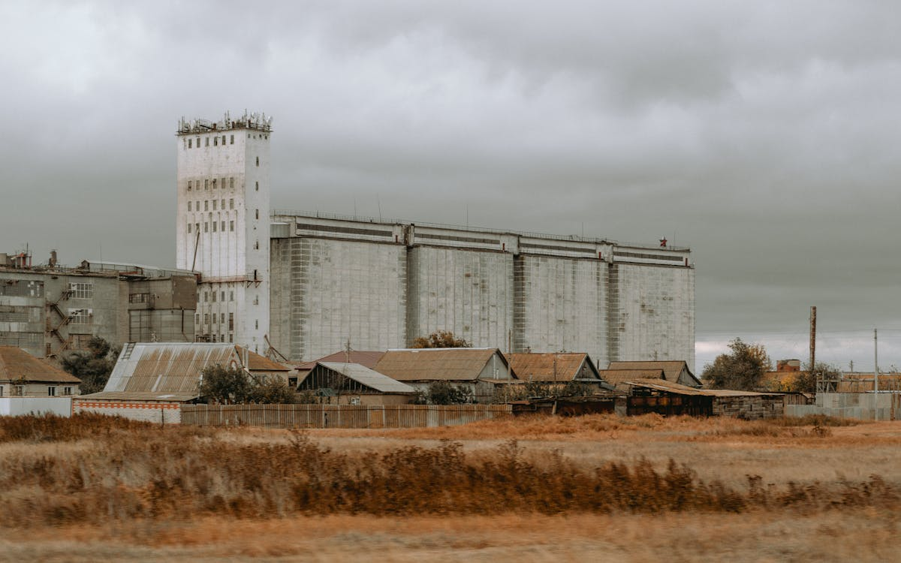
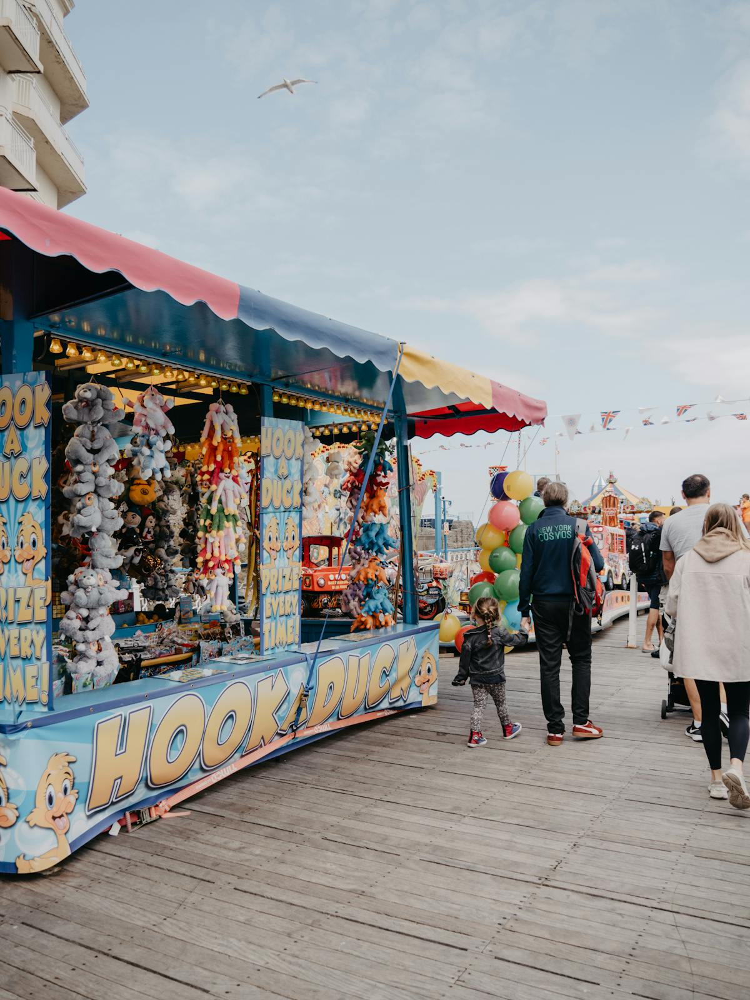
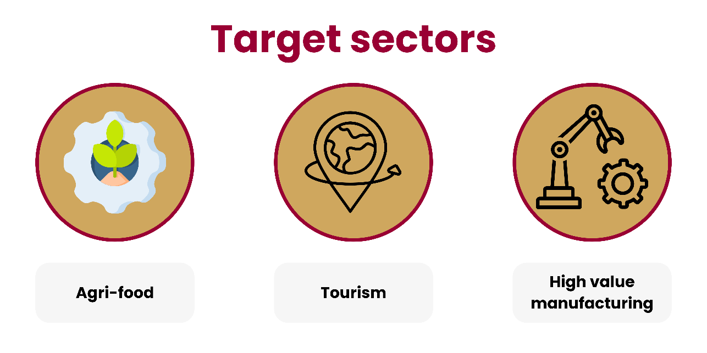

The Innovation and Growth Fund is positioned as a flexible £5 million mechanism to close viability gaps, unlock private investment and help North Wales firms innovate, commercialise and grow.
£5m
Public funding envelope
Capital-only fund to be refined at BJC stage.
40%
Maximum grant share
Aggregate working assumption across the Fund.
60%
Match funding
Expected from recipients or other eligible sources.
30
Illustrative awards
10 larger grants and 20 smaller grants in early planning.
3
Priority sectors
Agri-food, tourism and high value manufacturing.
6
Local authority areas
North Wales-wide geographic reach.
SOC proposition
A flexible missing piece in the support landscape
The SOC frames the Fund as a Growth Deal-backed intervention for business-led innovation, productivity and growth. It is not intended to duplicate existing support; its value is in helping SMEs overcome finance, viability, confidence and commercialisation barriers.
The Fund should help businesses capture opportunities linked to universities, colleges, Growth Deal projects, local authorities, Welsh Government, UK Government initiatives, the Flintshire and Wrexham Investment Zone and Anglesey Freeport.
Innovation Productivity Jobs Regional access
Why now
Built for progression to BJC
15/15
Preferred option score across critical success factors.
£1.50
Minimum match funding per £1 grant, based on the 40/60 assumption.
2026
May 2026 SOC date, with BJC work next.
2036
Growth Deal funding horizon confirmed by official Growth Deal context.
Strategic Case | Cynllun Twf
Sector-focused, place-sensitive support for North Wales SMEs
The strategic case connects a clear regional policy fit with practical barriers facing SMEs: finance gaps, risk aversion, information failures, commercialisation barriers and wider benefits that individual firms cannot fully capture.

Bwyd-amaeth
Agri-food
Support for agri-tech, processing, diversification, low-carbon production and resilience where capital costs and market risks hold back investment.

Twristiaeth
Tourism
Support for modernisation, digital adoption and year-round visitor activity in a sector affected by seasonality and tight margins.
Arloesi mewn Gweithgynhyrchu Uwch
High value manufacturing
Support for automation, digitalisation, commercialisation and supply-chain readiness, building from the region's established manufacturing strengths.
Market failures to outcomes
How the Fund changes investment behaviour

Regional context
SMEs are central to the North Wales economy
The SOC notes that SMEs account for 99.3% of businesses, 62.3% of employment and 42.5% of turnover across Wales. In North Wales, many are small, dispersed and owner-managed, particularly in rural and coastal areas.
Spatial differences matter: Flintshire and Wrexham benefit from the north-east manufacturing corridor, while Gwynedd, Conwy and Denbighshire have lower productivity and more rural or coastal economic structures.
Alignment
A direct fit with wider Growth Deal aims
The Fund aligns with the North Wales Growth Deal, the Regional Economic Framework, Welsh Government priorities, Wales Innovates, and the Agri-food and Tourism and Innovation in High Value Manufacturing programmes.
Official Growth Deal material positions the wider programme around a more vibrant, sustainable and resilient North Wales economy, improved productivity, new jobs and high value sectors.
Economic Case
Option 3 provides the strongest SOC-level fit
Six options were assessed against five critical success factors. The preferred £5m mixed finance option scored 3 across every factor and remains the recommended way forward for further testing at BJC stage.
Critical success factor scoring
Longlist assessment
Scores are from Table 3.3, where 1 = poor fit, 2 = acceptable and 3 = strong fit.
Option
Description
Score
Shortlisted
Key interpretation
1. Do nothing
No new Fund; businesses rely on existing support and market finance.
10
Reference case
Does not address identified market failures or viability gaps.
2. Do less: £3m
Smaller intervention focused on clearest gaps.
12
No
Lower delivery risk but insufficient strategic scale.
3. Preferred: £5m
Flexible grant, loan and blended finance package.
15
Yes
Strongest proportionate fit with need, envelope and delivery requirements.
4. Do more: £10m
Larger fund with wider reach.
9
No
Pipeline, affordability and achievability risks are material.
5. All grant
Capital grant support only.
11
Yes
Accessible and simple, but weaker on recycling and deadweight risk.
6. All loan
Repayable finance only.
10
No
Unlikely to close viability gaps for riskier SME projects.
Financial Case
Making £5m stretch through leverage, product flexibility and staged delivery
The SOC sets out a capital-only £5m public funding envelope and uses early planning assumptions to test how the Fund could balance reach, leverage, accessibility and risk. The detailed product mix remains a BJC decision, but the financial case already points to a fund that should be flexible enough for smaller SMEs while still attracting meaningful private or eligible public match.
£5m
Capital-only public funding envelope available for the Fund.
£7.5m
Minimum match implied if the full grant envelope follows the 40/60 aggregate assumption.
£12.5m
Minimum total project value implied by £5m grant plus £7.5m match.
3 yrs
Indicative deployment profile, with Year 2 as the main delivery year.
Affordability read
The working model is deliberately flexible
The Fund is designed around a maximum 40% aggregate grant contribution and at least 60% match funding. This is intended to stretch the £5m envelope, demonstrate applicant commitment and reduce dependency on public support.
At project level, the intervention rate can still vary. Smaller capital grants may support up to 50% of eligible costs to improve accessibility for micro and smaller businesses, while larger grants are expected to require a stronger applicant contribution.
Low-interest loans and blended finance remain options to test at BJC. The SOC avoids depending on recycled loan repayments in the initial affordability position, which keeps the case suitably cautious at this stage.
Funding products
Routes to be explored during BJC
Funding route
Indicative parameters
Smaller capital grants
Capped at £100,000 per project, with grant funding up to 50% of eligible costs.
Larger capital grants
Capped at £500,000 per project, with grant funding up to 40% of eligible costs.
Low-interest loans
Offered at 0% or below market-rate interest, with terms to confirm at BJC.
Blended finance
Capped at £750,000 per project, up to 60% of eligible costs.
Match sources
Potential co-investment routes
Source
Role
Applicant capital
Direct contribution to eligible project costs.
Commercial borrowing
Bank finance or repayable finance alongside Fund support.
Investor funding
Equity, shareholder funding or project-linked investment.
Other eligible public funding
Permitted where eligibility, timing and subsidy rules align.
Cost and delivery assumptions
What BJC needs to pin down
The illustrative grant scenario tests a portfolio of 30 awards: 10 larger capital grants averaging £400,000 and 20 smaller grants averaging £50,000. This is not a final product mix; it is a practical affordability lens.
BJC will need to confirm award size, intervention rates, loan terms, administrative costs, match evidence, subsidy control treatment and whether any repayment or recycling mechanism is worth the added complexity.
Leverage
Grant and match
40% grant, 60% match.
Profile
Three-year deployment
Year 2 is the main delivery year.
Awards
Illustrative allocation
£4m larger grants; £1m smaller grants.
Caps
Product ceilings
Loan terms and blended rules to confirm.
Commercial & Management Cases
Governance is established; operational detail moves into BJC
The Fund is expected to sit within Ambition North Wales' Growth Deal governance framework, with PMO day-to-day management and a detailed scheme of delegation, subsidy, application and monitoring model developed at BJC.
BJC pathway
From SOC approval to live application process
Strategic risks
What BJC needs to resolve
SME participation
Market engagement and simple guidance are needed to avoid low or uneven uptake.
Match funding uncertainty
Evidence rules and potential co-funding routes need to be tested before approval.
Intervention rates
Rates must be high enough to close viability gaps without weakening additionality.
Loan appetite
SME reluctance to take on debt could limit demand for repayable or blended products.
Delivery speed
Slow approvals could deter SMEs and delay spend against the profile.
Compliance and default
Due diligence, clawback, repayment and monitoring arrangements must be proportionate.
Monitoring indicators
What success should track
Fund delivery outputs
Applications, awards, award value, and geographic and sector distribution.
Investment and leverage
Total project value, private and public match, leverage ratio and recycled funding.
Business outcomes
SMEs supported, jobs created and safeguarded, productivity gains and new markets.
Innovation outcomes
New products, services, processes, R&D activity and collaboration with innovation partners.